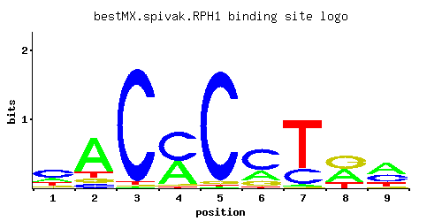

RPH1
YER169W, KDM4
JmjC domain-containing histone demethylase which can specifically demethylate H3K36 tri- and dimethyl modification states; transcriptional repressor of PHR1; Rph1p phosphorylation during DNA damage is under control of the MEC1-RAD53 pathway
Best-performing DNA-binding model.

View and copy the recommended matrices ↘
A | 0.206 0.710 0.010 0.408 0.010 0.245 0.032 0.399 0.459 C | 0.504 0.086 0.961 0.550 0.953 0.592 0.236 0.010 0.328 G | 0.105 0.086 0.010 0.032 0.028 0.136 0.010 0.424 0.044 T | 0.184 0.119 0.019 0.010 0.010 0.027 0.722 0.167 0.170
A | 20 71 1 40 1 24 3 39 45 C | 50 8 96 55 95 59 23 1 32 G | 10 8 1 3 2 13 1 42 4 T | 18 11 1 1 1 2 72 16 17
A | -0.44 0.80 -3.47 0.24 -3.47 -0.27 -2.30 0.22 0.36 C | 1.03 -0.74 1.68 1.12 1.67 1.19 0.27 -2.89 0.60 G | -0.54 -0.74 -2.89 -1.73 -1.86 -0.28 -2.89 0.86 -1.41 T | -0.55 -0.99 -2.82 -3.47 -3.47 -2.47 0.81 -0.65 -0.63
Alternative candidate matrices 9
Historical matrix candidates from the original ScerTF database. Expand a source to inspect its original logo, scores, and matrix values.
RPH1Badis et. al.P = 0.001065View matrix ↘
RPH1_AFoat et. al.P = 7.77e-08View matrix ↘
RPH1_BFoat et. al.P = 0.2069View matrix ↘
RPH1_CFoat et. al.P = 0.2143View matrix ↘
RPH1_DFoat et. al.P = 0.5853View matrix ↘
RPH1Harbison et. al.P = 0.2294View matrix ↘
RPH1Macisaac et. alP = 0.2294View matrix ↘
RPH1Zhu et. al.P = 0.09329View matrix ↘
RPH1Zhao and StormoP = 0.003682View matrix ↘
Gene-level annotations and interactions.
Genes bound in ChIP-chip experiments 24 genes
YBL022C, YBL072C, YBR033W, YBR036C, YBR056W, YBR126C, YCL057W, YCL058C, YCL074W, YDL120W, YDL121C, YDL191W, YDR098C, YDR428C, YDR449C, YDR450W, YFR009W, YHR136C, YHR137W, YKR062W, YLR336C, YLR338W, YOL026C, YOL121C
Genes affected by TF deletion 186 genes
YBR006W, YJR016C, YLR274W, YLR218C, YLR248W, YGL009C, YHR113W, YHR146W, YKL043W, YLR060W, YOR377W, YDR207C, YKR076W, YMR040W, YOL048C, YPL206C, YPL240C, YAL008W, YOR038C, YPL016W, YPR138C, YLR309C, YMR071C, YNL115C, YNL149C, YOR285W, YOR317W, YOR291W, YER028C, YER058W, YGR244C, YLR156W, YNL333W, YNL305C, YBR093C, YBR129C, YGR062C, YHR024C, YLR304C, YOL073C, YOL076W, YOL105C, YPR047W, YBL024W, YBR288C, YDR281C, YDR313C, YER057C, YGR211W, YLR155C, YLR157C, YNL332W, YNL306W, YIL156W, YML121W, YAL043C, YMR173W, YPL059W, YPL160W, YER119C, YIL085C, YNR066C, YOR228C, YOR260W, YOR198C, YPL246C, YAR002W, YBR166C, YGR131W, YKL087C, YLR099C, YMR171C, YNL214W, YPL054W, YIR036C, YLL009C, YLR346C, YDR347W, YHR215W, YKL149C, YPL122C, YPL154C, YBR101C, YBR105C, YDL040C, YGR012W, YIR037W, YIR010W, YJR156C, YLL041C, YMR083W, YNL184C, YOL083W, YOR292C, YBL065W, YBR264C, YER062C, YGL112C, YLR159W, YLR161W, YMR317W, YMR321C, YNR034W, YNR038W, YPL091W, YPL123C, YCR061W, YNL065W, YOR209C, YDR345C, YAL023C, YBR241C, YJL067W, YKL058W, YLR290C, YML130C, YNL037C, YAL049C, YJL066C, YJL068C, YKL120W, YPL032C, YDL021W, YFL059W, YGR019W, YLR324W, YLR356W, YOR383C, YGR232W, YLR136C, YPL132W, YDR115W, YNL160W, YOR330C, YPR067W, YER044C, YGR261C, YGR231C, YHL004W, YHR016C, YJR044C, YKR065C, YLR297W, YOR215C, YOR217W, YBR185C, YJL143W, YKL066W, YKL103C, YMR182C, YMR186W, YNL269W, YPR159W, YBR053C, YMR034C, YOL071W, YAL030W, YBR244W, YDR211W, YGL032C, YGR149W, YHR135C, YHR137W, YHR140W, YHR171W, YLR047C, YLR115W, YMR181C, YPL075W, YPR038W, YGR270W, YIL070C, YKL192C, YLR174W, YML110C, YPL172C, YMR157C, YNL200C, YOR306C, YPR037C, YJL200C, YKR001C, YLR173W, YNL007C, YMR307W, YNR017W
Genes supported by both experiments 1 genes
YHR137W
Predicted TF–TF partners 10 genes
GIS1, MIG1, MIG3, MSN2, MSN4, RGM1, RSF2, SUT1, USV1, YER184C